O=Cc1ccc(O)c(O)c113 molecular records; 10 preparation events; 7 selected paths. Four-event main route from 3,4-dihydroxybenzaldehyde to racemic spirobroussonin B, plus reported methyl-analogue conversion, gram-scale preparation and HPLC fractions. The named unnumbered chalcone used for 5a is an explicit upstream boundary. Scheme-only protected 6 and radical intermediates are mechanistic, not isolated preparative nodes.
完整 JSON · 逐步 CSV · 路线序列 · SDF · HRMS 核对
| 事件 | 分子连接 | 报告产率 | Canonical reaction SMILES |
|---|---|---|---|
| E01 | 1 → 2 | 2: 92.5% | O=Cc1ccc(O)c(O)c1>>CCOCOc1ccc(C=O)cc1OCOCC |
| E02 | 2 + 3 → 4 | 4: 66.8% | CCOCOc1ccc(C=O)cc1OCOCC.COc1cc(O)ccc1C(C)=O>>CCOCOc1ccc(/C=C/C(=O)c2ccc(O)cc2OC)cc1OCOCC |
| E03 | 4 → 5 | 5: 90.6% | CCOCOc1ccc(/C=C/C(=O)c2ccc(O)cc2OC)cc1OCOCC>>CCOCOc1ccc(CCCc2ccc(O)cc2OC)cc1OCOCC |
| E04 | 5 → 7 | 7: 74.4% | CCOCOc1ccc(CCCc2ccc(O)cc2OC)cc1OCOCC>>COC1=CC(=O)C=CC12CCCc1cc(O)c(O)cc12 |
| E05 | 4a-unnumbered → 5a | 5a: 78% | CCOCOc1cc(/C=C/C(=O)c2ccc(O)cc2OC)ccc1OC>>CCOCOc1cc(CCCc2ccc(O)cc2OC)ccc1OC |
| E06 | 5a → 7 + 8 | 7: 53%; 8: 10% | CCOCOc1cc(CCCc2ccc(O)cc2OC)ccc1OC>>COC1=CC(=O)C=CC12CCCc1cc(O)c(O)cc12.COC1=CC(=O)C=CC12CCCc1cc(OC)c(O)cc12 |
| E07 | 8 → 7 | not reported | COC1=CC(=O)C=CC12CCCc1cc(OC)c(O)cc12>>COC1=CC(=O)C=CC12CCCc1cc(O)c(O)cc12 |
| E08 | 5 → 7 | 7: 51.1% | CCOCOc1ccc(CCCc2ccc(O)cc2OC)cc1OCOCC>>COC1=CC(=O)C=CC12CCCc1cc(O)c(O)cc12 |
| E09 | 7 → 7-plus + 7-minus | not reported | COC1=CC(=O)C=CC12CCCc1cc(O)c(O)cc12>>COC1=CC(=O)C=C[C@@]12CCCc1cc(O)c(O)cc12.COC1=CC(=O)C=C[C@]12CCCc1cc(O)c(O)cc12 |
| E10 | 8 → 8-plus + 8-minus | not reported | COC1=CC(=O)C=CC12CCCc1cc(OC)c(O)cc12>>COC1=CC(=O)C=C[C@@]12CCCc1cc(OC)c(O)cc12.COC1=CC(=O)C=C[C@]12CCCc1cc(OC)c(O)cc12 |
O=Cc1ccc(O)c(O)c1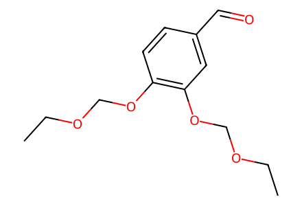
CCOCOc1ccc(C=O)cc1OCOCC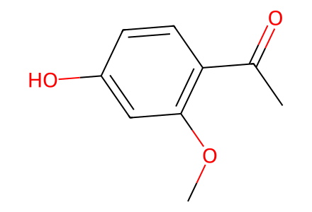
COc1cc(O)ccc1C(C)=O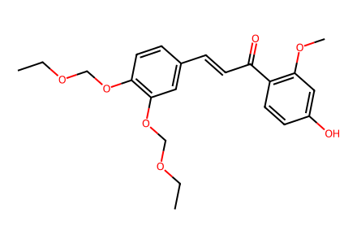
CCOCOc1ccc(/C=C/C(=O)c2ccc(O)cc2OC)cc1OCOCC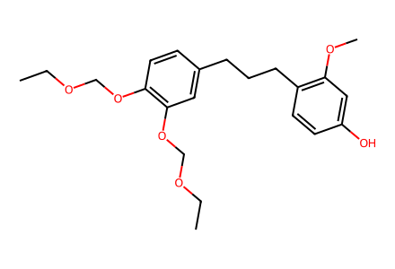
CCOCOc1ccc(CCCc2ccc(O)cc2OC)cc1OCOCC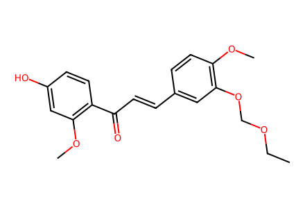
CCOCOc1cc(/C=C/C(=O)c2ccc(O)cc2OC)ccc1OC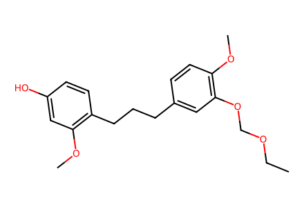
CCOCOc1cc(CCCc2ccc(O)cc2OC)ccc1OC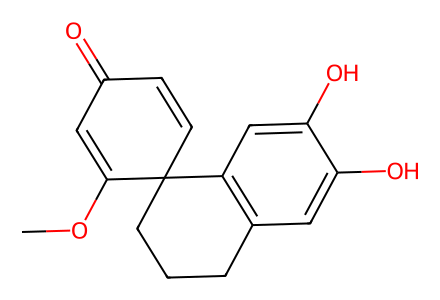
COC1=CC(=O)C=CC12CCCc1cc(O)c(O)cc12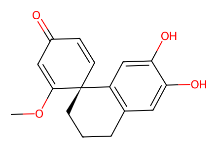
COC1=CC(=O)C=C[C@@]12CCCc1cc(O)c(O)cc12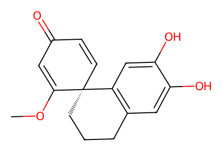
COC1=CC(=O)C=C[C@]12CCCc1cc(O)c(O)cc12COC1=CC(=O)C=CC12CCCc1cc(OC)c(O)cc12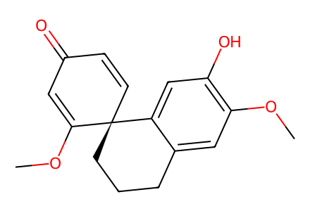
COC1=CC(=O)C=C[C@@]12CCCc1cc(OC)c(O)cc12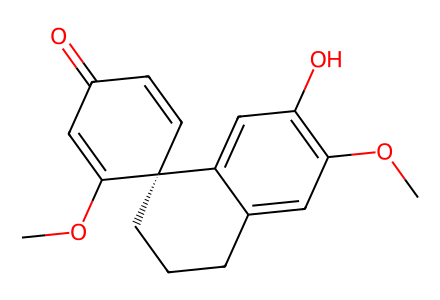
COC1=CC(=O)C=C[C@]12CCCc1cc(OC)c(O)cc12